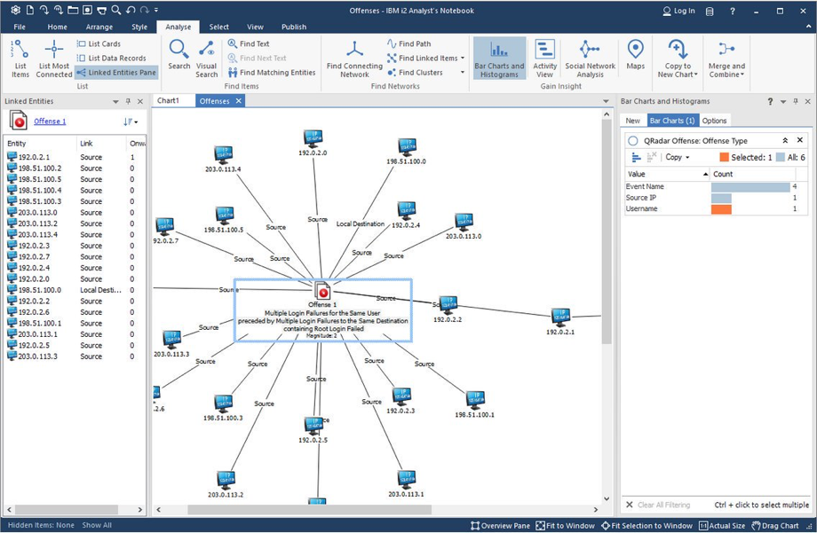

Ian Kitchen
UX Designer

I'm a UX Designer working in the i2 group at IBM.
My focus has been on the design of software to support the investigation of criminal networks through the analysis of relationships, financial transactions and communications data.
I work by fully understanding user's needs and painpoints, validating assumptions and then mapping out how new capabilities can fit into the workflow. Creating scenarios with users in order to test proposals is key to working this way.
I believe involving the wider product team in this process is essential to a project's success.
My focus has been on the design of software to support the investigation of criminal networks through the analysis of relationships, financial transactions and communications data.
I work by fully understanding user's needs and painpoints, validating assumptions and then mapping out how new capabilities can fit into the workflow. Creating scenarios with users in order to test proposals is key to working this way.
I believe involving the wider product team in this process is essential to a project's success.
What can I do for you?

Analyse user needs and pain points
Lead ideation sessions to identify innovative solutions
Work with engineering to ensure design concepts can be implemented
Produce low-fi prototypes to test workflow against realistic scenarios
Craft high-fi interactive prototypes to test affordance and feedback
Work with front end developers on the detail of a design, including visual design
Lead ideation sessions to identify innovative solutions
Work with engineering to ensure design concepts can be implemented
Produce low-fi prototypes to test workflow against realistic scenarios
Craft high-fi interactive prototypes to test affordance and feedback
Work with front end developers on the detail of a design, including visual design
What have I done?

Application Refresh

Activity View

Measuring Connectivity
Application Refresh
The Problem
The business had for a number of years prioritised new features over usability enhancements which resulted in a poor organisation of capabilities. Usability studies identified the need to rethink the organisation of the interface to reduce the learning curve for new users.
Exploration
A review of similar products and of desktop conventions led us to decide on the adoption of a ribbon interface as the most appropriate solution. The was influenced by a key persona being our novice users who we had evidence would have had experience with the Office suite.
The business had for a number of years prioritised new features over usability enhancements which resulted in a poor organisation of capabilities. Usability studies identified the need to rethink the organisation of the interface to reduce the learning curve for new users.
Exploration
A review of similar products and of desktop conventions led us to decide on the adoption of a ribbon interface as the most appropriate solution. The was influenced by a key persona being our novice users who we had evidence would have had experience with the Office suite.
Command Categorisation
I conducted a number of card sorting exercises with users to understand their mental models. All commands in the current version of the product were printed on cards and users were asked to group them in a way that mirrored their way of working.
Evaluation
The proposed design was created in Axure and click counting tests used to evaluate the discoverability of the new arrangement. In many cases even experienced users found commands easier to find using the new design.
I conducted a number of card sorting exercises with users to understand their mental models. All commands in the current version of the product were printed on cards and users were asked to group them in a way that mirrored their way of working.
Evaluation
The proposed design was created in Axure and click counting tests used to evaluate the discoverability of the new arrangement. In many cases even experienced users found commands easier to find using the new design.
Results
The screenshot shows one the tabs in the new design featuring some of the 200 new icons I created. The release was a great success confirmed both by surveys and also by improved sales.
The screenshot shows one the tabs in the new design featuring some of the 200 new icons I created. The release was a great success confirmed both by surveys and also by improved sales.

Where and When?
Company
IBM
i2 Limited
i2 Limited
i2 Limited
Dorling Kindersley
Energia Software
University of Edinburgh
Kellogs
University of Newcastle upon Tyne
Role
Senior UX Designer
UX Designer
Developer Manager
Software Developer
Software Developer
Founder
MSc Artificial Intelligence
Graduate Trainee
BEng Electrical Eng.
From
2012
2006
2002
1998
1995
1991
1990
1988
1985
–
–
–
–
–
–
–
–
–
–
To
present
2012
2006
2002
1998
1995
1991
1990
1988
Years
How and Why?
How
Creating systems for making sense of the multitude of data available to an analyst demands a deep understanding of the problem space. I'm trained in applying IBM Design Thinking to meet this challenge by observing, reflecting and making.
I'm skilled in many tools, in particular: Axure, Balsamiq, Sketch and InVision, Adobe XD, HTML, CSS and Javascript
I have extensive experience in Data Visualisation, Prototyping, User Centred Design, Design Thinking, Interaction Design. I'm also the holder of a number of patents.
Creating systems for making sense of the multitude of data available to an analyst demands a deep understanding of the problem space. I'm trained in applying IBM Design Thinking to meet this challenge by observing, reflecting and making.
I'm skilled in many tools, in particular: Axure, Balsamiq, Sketch and InVision, Adobe XD, HTML, CSS and Javascript
I have extensive experience in Data Visualisation, Prototyping, User Centred Design, Design Thinking, Interaction Design. I'm also the holder of a number of patents.
Why
The short answer; because I hate badly designed things.
The slightly longer answer — I enjoy the process of really getting to grips with a problem and exploring different ways of finding a solution. When users are delighted by a solution I've designed then I'm delighted too. After all work is tough and designers are lucky to have some great software tools to work with, I think everyone else deserves equally great tools and systems.
The short answer; because I hate badly designed things.
The slightly longer answer — I enjoy the process of really getting to grips with a problem and exploring different ways of finding a solution. When users are delighted by a solution I've designed then I'm delighted too. After all work is tough and designers are lucky to have some great software tools to work with, I think everyone else deserves equally great tools and systems.
Want to Get in Touch?
ian@oceanrain.com
linkedin.com/in/ian/ian-kitchen-05399316
ForceDirected on Twitter
1
2
3
4
5
6
7
8
9
0
1
2